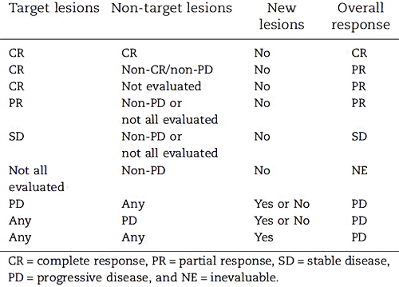

MÓDULO 3 : ENFERMEDAD DISEMINADA Y RECAÍDA LOCORREGIONAL
3.4 Monitorización y seguimiento durante el tratamiento de la enfermedad diseminada
Objetivos
Criterios de valoración de la respuesta por imagen (RECIST).
Criterios de evaluación de la toxicidad de las terapias sistémicas (CTCAE).

Claves de la monitorización del CM durante el tratamiento activo, parámetros clínicos y pruebas de imagen a considerar en el seguimiento de pacientes con enfermedad diseminada.
Periodicidad recomendada en la monitorización de las pacientes con CM diseminado.
Introducción
Durante el tratamiento del CM metastástico es fundamental la monitorización de los síntomas de la enfermedad, así como del volumen tumoral para determinar el beneficio del tratamiento. La evaluación incluye el examen físico, la anamnesis, analítica general con hemograma y bioquímica (función hepática y renal, ionograma, fosfatasa alcalina y calcio), estudios de imagen y marcadores en sangre.
Es fundamental hacer un adecuado balance entre el control de la enfermedad y la toxicidad del tratamiento pautado con la información procedente de todas estas fuentes, que en ocasiones puede resultar contradictoria (1).
La progresión de la enfermedad se puede definir en varias dimensiones bien por crecimiento o empeoramiento de la enfermedad en áreas previamente conocidas o bien por aparición de nuevas lesiones.
Hay datos que pueden orientarnos a sospechar que la terapia empleada es ineficaz como son el empeoramiento sintomático (dolor, disnea…), el empeoramiento del estado funcional, la pérdida de peso no justificada, empeoramiento del perfil hepático, hipercalcemia, cambios radiológicos (TC, gammagrafía ósea, PET/TC) o aumento de marcadores tumorales.
Para objetivar la respuesta se han definido unos criterios que se emplean de manera estándar en los ensayos clínicos pero que pueden ser de utilidad en la práctica asistencial y clasifican la respuesta en : estabilidad de la enfermedad, progresión o respuesta tumoral. Se recomienda intentar usar el mismo método para la evaluación de la enfermedad (1). Dentro de las posibles pruebas a realizar se incluyen :
TC toraco-abdomino-pélvico: se recomienda como prueba de imagen a realizar basalmente y a lo largo del curso del tratamiento. En caso de que no pueda emplearse contraste, a veces puede complementarse con una ecografía o RMN abdominal para valorar la presencia de enfermedad hepática. La ecografía abdominal puede tener especial interés también en la evaluación de pacientes con sospecha de patología obstructiva de la vía biliar.
La RMN es la mejor técnica para explorar el SNC, pero el costo, la duración del procedimiento y su disponibilidad pueden ser limitantes para que se trate de la exploración fundamental en la monitorización de la respuesta. La TC craneal con contraste es otra alternativa para explorar el SNC. Tras el tratamiento de la enfermedad en SNC hay que considerar su evaluación periódica, así como ante la presencia de nuevos signos o síntomas neurológicos. La RMN es de elección en la evaluación de la sospecha de compresión medular y de la posible afectación del plexo braquial.
Radiología convencional: es una técnica rápida, de fácil lectura y bajo costo que no precisa preparación específica, puede ser especialmente útil en definir fracturas en el caso de pacientes con enfermedad óseas, para el seguimiento de derrames pleurales en algunas pacientes, o en la detección de complicaciones como neumonitis tóxicas, neumonías infecciosas.
Los estudios de imagen funcional como las gammagrafías óseas (GO) y la PET TC son en ocasiones controvertidos para valorar la respuesta. Las GO particularmente pueden mostrar un aumento de captación como consecuencia de la respuesta inicial (efecto flare) que puede confundirse con progresión en las primeras exploraciones tras iniciar un nuevo tratamiento (1), se sugiere realizarla conjuntamente con otra prueba de imagen (TC, RMN o radiografía simple) para poder detectar la progresión con mayor exactitud (2). El efecto flare suele producirse en los 1-4 meses del inicio del tratamiento tanto con terapia hormonal como con quimioterapia, puede tener como consecuencia un aumento del dolor óseo, e incluso hipercalcemia o aumento de MTs, ha de distinguirse de una verdadera progresión de la enfermedad. Por otra parte, la GO puede no identificar las lesiones exclusivamente líticas. La evaluación de la PET TC en ausencia de unos estándares validados y reproducibles es controvertida para la monitorización de la respuesta de pacientes con CM metastásico (1, 3), en este sentido GEICAM recomienda limitar su uso a situaciones clínicas en que exista una sospecha razonable de progresión no evidenciada por otras técnicas de imagen (2). Haciendo un análisis sistemático comparativo del valor de las distintas técnicas de imagen para la evaluación de la respuesta en pacientes con CM metastásico, se pone de manifiesto que la evidencia en este sentido es limitada para poder mostrar preferencia por alguna de las alternativas específicamente (4, 5).
En cuanto al uso de los marcadores tumorales (MTs) plasmáticos (CEA, CA 15-3 y CA 27-29), no existe evidencia suficiente para que la elevación de los MTs se considere diagnostica de fallo de tratamiento en CM metastásico, particularmente si esta elevación se produce en las primeras 4-6 semanas del inicio de un nuevo esquema terapéutico. Por lo tanto, no se recomienda un cambio de estrategia exclusivamente basado en la elevación de MTs, no se ha demostrado que el cambio precoz de la terapia tenga impacto en la SG. Si se recomienda, ante una elevación progresiva y mantenida de los MTs, proceder a un seguimiento más estrecho y una re-estadificación de la enfermedad de la paciente (2, 4), los MTs pueden ser de ayuda en el seguimiento de pacientes con enfermedad no medible (4). Sin embargo, dado que la recomendación para su uso se basa en la experiencia clínica de paneles de expertos en ausencia de estudios clínicos diseñados para evaluar su utilidad clínica puede ser razonable, según ASCO, incluso no utilizarlos como herramienta para la monitorización del CM metastásico (6).
Actualmente no se recomienda cambiar el tratamiento en base a la detección de cambios en marcadores tumorales circulantes (CTCs y ctDNA) en CM metastásico. Múltiples estudios han sugerido el papel pronóstico de las CTCs en este contexto, pero el único estudio que ha explorado el papel del cambio en los niveles de las CTCs tras el primer ciclo de tratamiento (SWOG SO500) como herramienta para orientar un cambio de esquema terapéutico no ha demostrado impacto en SLP ni SG (3, 6-8).
Un reciente estudio del Gruppo Italiano Mammella que explora las controversias sobre la monitorización del CM metastásico en tratamiento sistémico nos indica que la técnica de imagen preferida para el seguimiento es la TAC, y que los factores que más influyen en la estrategia de monitorización seleccionada son el estado funcional, la biología de la enfermedad, las contraindicaciones para la realización de técnicas específicas, la presencia de enfermedad medible y el perfil de toxicidad del fármaco empleado (9).
Definición de periodicidad de la monitorización
La frecuencia óptima para repetir los estudios a lo largo de la evolución del CM metastásico no está firmemente establecida, se basa en los protocolos empleados en los ensayos clínicos y recomendaciones de expertos.
En todo caso se recomienda adaptarla al tipo de terapia empleada, balanceando el riesgo entre evitar la toxicidad innecesaria de una terapia potencialmente ineficaz y el riesgo asociado a cada una de las exploraciones incluido su costo. En todo caso ante la sospecha de una potencial progresión se recomienda adelantar el intervalo previsto.
La guía GEICAM se decanta por recomendar un intervalo de cada 3-4 meses, las guías SEOM recomiendan hacerlo cada 2-3 meses (4), mientras que las guías NCCN especifica el intervalo en función de la terapia, de la biología de la enfermedad y de la prueba a realizar (ver figura 1).
Figura 1 Intervalos y estudios sugeridos por las guías NCCN para la monitorización de pacientes con CM metastásico durante el tratamiento (10).
Criterios de valoración de la respuesta por imagen RECIST en CM metastásico
Por analogía con los ensayos clínicos los criterios RECIST suelen ser el estándar de evaluación de la respuesta en la práctica clínica (10, 11). No son los únicos validados, con anterioridad se han empleado los criterios de la OMS (12) y están en desarrollo nuevos criterios de respuesta inmune (13) que serán aplicables para el CM cuando dicho abordaje terapéutico se generalice.
Hay una primera clasificación de la enfermedad metastásica de acuerdo a las consideraciones de la clasificación RECIST, se considerará enfermedad medible la presencia de al menos una lesión que pueda ser adecuadamente media en al menos una dimensión con un diámetro mayor de >20 mm con técnicas convencionales o >10 mm con TC, por el contrario se considerarán lesiones no medibles todas las demás lesiones incluyendo de menor tamaño, la enfermedad ósea, carcinomatosis leptomeningea, ascitis, derrame pleural o pericárdico, linfangitis cutánea o pulmonar, o enfermedad inflamatoria de la mama. Una vez definidas las lesiones existentes, se identificarán las lesiones diana (todas las lesiones medibles hasta un máximo de 2 lesiones por órgano y 5 lesiones en total representativas de los órganos afectados) y las lesiones no diana que serán todas las demás (incluyendo las medibles que exceden de dos por órgano o del total de 5 y las no medibles). La suma de los diámetros de todas las lesiones diana será registrada de entrada y será usada como referencia, todas las lesiones han de ser documentadas basalmente y durante el seguimiento.
De acuerdo con los criterios RECIST las definiciones para la evaluación de la enfermedad diana son :
Respuesta completa
Desaparición de todas las lesiones diana, cualquier ganglio linfático (diana o no diana) debe tener una reducción en su eje corto a < 10mm.
Respuesta parcial
Permitir cirugías conservadoras en tumores operables en los que de entrada ha de plantearse una mastectomía, evitando algunos de los riesgos asociados a la reconstrucción, mejorando el resultado cosmético.
Progresión de la enfermedad
Incremento de al menos el 20% en la suma de los diámetros de las lesiones diana, tomando como referencia la menor suma durante el estudio (incluye la basal si esta es la más pequeña a lo largo del estudio). Además del incremento del 20% la suma debe demostrar también un incremento absoluto de al menos 5 mm.
Enfermedad estable
No existe ni una reducción suficiente para calificarlo como respuesta parcial ni un aumento suficiente para calificarlo de progresión tomando como referencia la suma menor de diámetros durante el estudio.
Las definiciones para la enfermedad no diana serían según los criterios RECIST :
Respuesta completa
desaparición de todas las lesiones no diana y normalización de los niveles de MTs. Todos los ganglios linfáticos deben ser no patológicos en términos de tamaño (su eje corto a < 10mm).
No respuesta completa/No progresión de la enfermedad
Persistencia de una o varias lesiones no diana y/o mantenimiento de los MTs por encima de los límites normales.
Progresión de la enfermedad
Progresión inequívoca de las lesiones no diana existentes.
Para proceder a la evaluación completa de la enfermedad se tendrán en cuenta los datos de respuesta tanto de la enfermedad diana como de la no diana, y la aparición de nuevas lesiones como indica la figura 2.
Figura 2 Categorización final de la respuesta en pacientes con enfermedad diana (con/sin no diana) de acuerdo con la evolución de las lesiones existentes y la presencia o no de nuevas lesiones según los criterios RECIST 1.1 (14).
Criterios de valoración de la toxicidad (CTCAEs)
Para estandarizar las definiciones de los eventos adversos de las pacientes en tratamiento antineoplásico, incluyendo las pacientes con CM metastásico, el NCI del NIH americano elabora una guía denominada CTCAE. Desde abril de 2018 está vigente la versión 5.0 (15). Estos criterios se emplean para la administración y dosificación de la terapia de modo que exista una consistencia en la definición de la toxicidad relacionada con el tratamiento. En general la toxicidad se grada como leve (G1), moderada (G2), grave (G3) y amenazante para la vida (G4), la muerte se consigna como G5. Existen múltiples categorías referidas a los distintos órganos y aparatos, siendo un 10% de los ítems síntomas reportados por los médicos basados en la anamnesis.